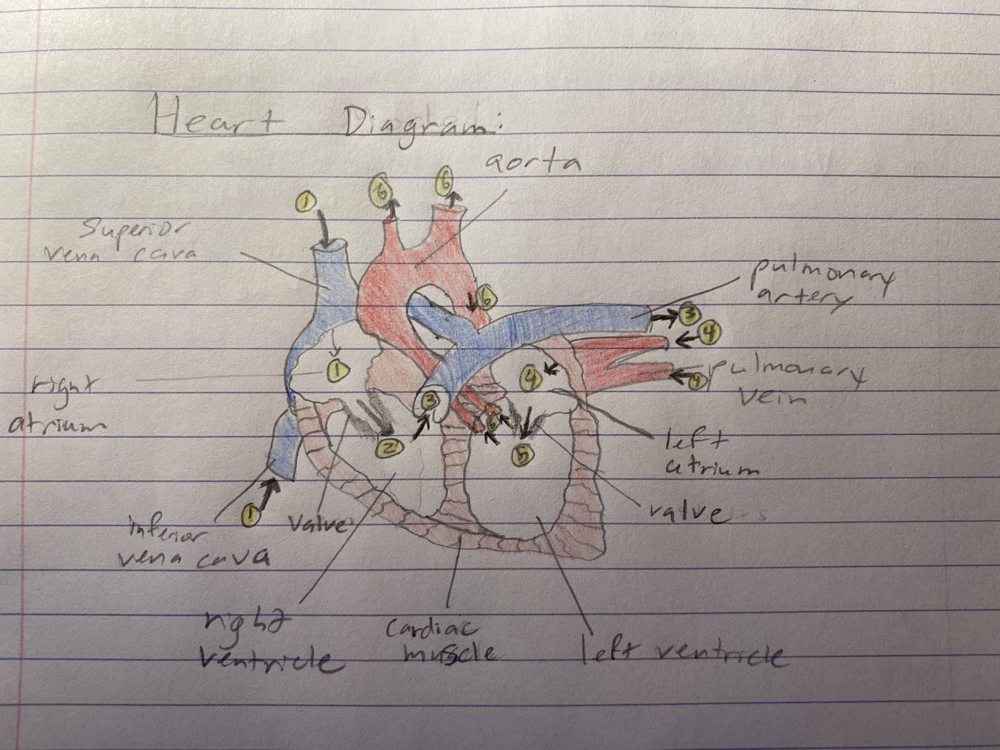

Adam Graneto's final project for Biology 103: Human Anatomy, Physiology, Disease, and Health.
This objective is "Science Concepts" which is about my knowledge of science themes and characteristics.
My first piece of work is my model of the heart, which shows my mastery of the course objective because it demonstrates my ability to understand and visually demonstrate scientific concepts.
This is my diagram of the heart. There are six steps in the process of the heart contracting or beating:
My second piece of work is my quiz answer about the journey food makes through the body, which shows my mastery of the course objective because it demonstrates my ability to understand and explain in words scientific concepts.
First food is fed into the mouth. Here it broken down so that it will be small enough to go down the esophagus tube. This is done mechanically through moving the jaw and chewing with the teeth. This is also done chemically through amylase enzymes in saliva, which is produced by the saliva glands. In addition, saliva also lubricates the food, which makes it easier to swallow and travel down the esophagus. Next, the food needs to be swallowed, thus moving it into the esophagus. To do this without sending the food down the trachea (and to the lungs), a flap moves that closes off the trachea and directs the food down the esophagus. As the food travels down the esophagus, it is moved along through the process of peristalsis, where when the food comes into contact with the lining of the esophagus, muscles contract to push the food along. After this, the food passes through a valve that passes it from the esophagus and to the cardia zone of the stomach; this valve closes once the food passes through it. Once in the stomach, the food moves to the top of the stomach, or fundus, where it waits before moving down to the body of the stomach to be digested. Here, the food is then broken down further, once again both mechanically, by a wave motion with the muscles, and chemically, with hydrochloric acid (HCI) and pepsin enzymes. At this point, the food has now been converted into chyme. In addition, a few types of food, like alcohol and aspirin, will be absorbed in the stomach. After this, the chyme then moves to the pylorus at the bottom of the stomach, which limits the flow as to not overwhelm the small intestine. In addition, the pylorus will also send any chyme back to the body of the stomach if it is not digested well enough yet. Once in the small intestine, the chyme will pass through the duodenum where more chemical and mechanical digestion will take place. After this, it moves through the jejunum, where nutrients will be absorbed by the cells in the villi. Next, it passes through the Ileum where digestion continues, particular of vitamin B12, in addition, bile acids that were produced by the liver are reabsorbed. After this, the chyme passes through the appendix and into the large intestine. Here, the chyme moves through the ascending and transverse colon where a lot of water and calcium is absorbed. Then it travels down the descending colon, where fecal material is stored and compacted. As it passes through the loop of the sigmoid colon, it moves into the rectum, where it is stored and compacted into feces. Finally, the body gets rid of the feces through the anus.